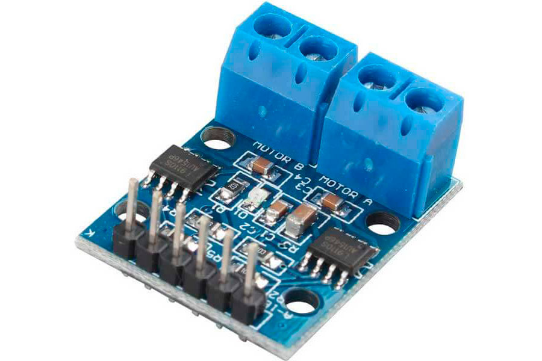
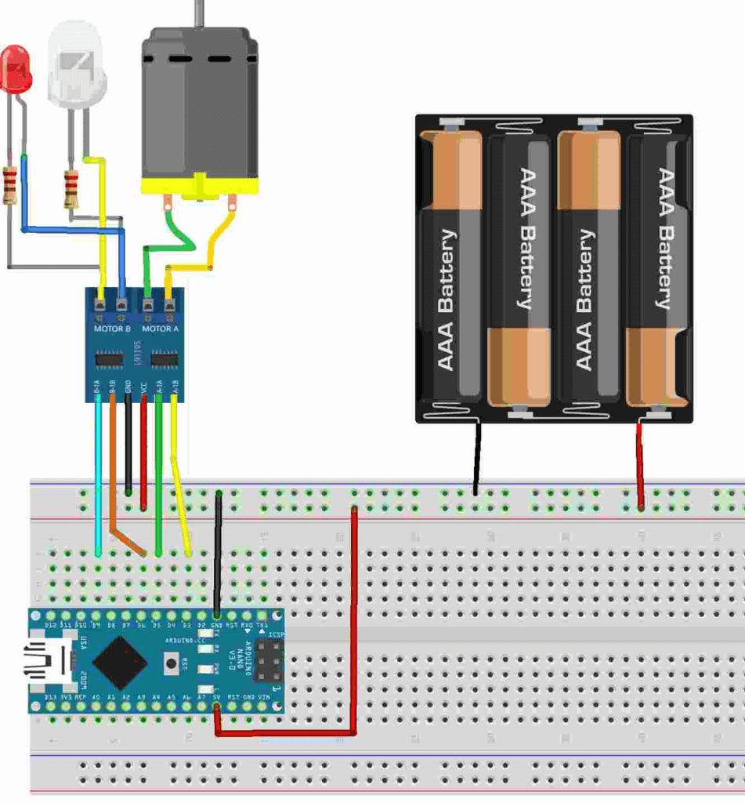

Драйвер шагового двигателя L911 | |
|  | Схема подключения |
Научившись «дрыгать» пинами и зажигать светодиоды фанаты и любители «Ардуино» хотят чего-то большего, чего-то помощнее, например научиться управлять моторами. Напрямую подключить мотор к микроконтроллеру нельзя, так как типовые токи пинов контроллера составляют несколько миллиампер, а у моторов, даже у игрушечных, счет идет на десятки и сотни миллиампер, вплоть до нескольких ампер. Тоже самое с напряжением: микроконтроллер оперирует напряжением до 5 В, а моторы бывают разного вольтажа. | |
Код программы// определяем, какие порты будем использовать для управления мотором и светодиодами#define FORWARD 3 #define BACK 5 #define WHITE_LIGHT 6 #define RED_LIGHT 9 #define LEDOUT 13 #define TIME 5000 void setup ()unsigned char Forward_Speed = 200; unsigned char Back_Speed = 160; unsigned char White_Light = 210; unsigned char Red_Light = 220; void setup() { // объявляем пины управления мостом как выходы: pinMode(FORWARD, OUTPUT); pinMode(BACK, OUTPUT); pinMode(WHITE_LIGHT, OUTPUT); pinMode(RED_LIGHT, OUTPUT); pinMode(LEDOUT, OUTPUT); } void loop () { // Робот едет вперед в течении времени TIME analogWrite(WHITE_LIGHT, White_Light); // Включить белый светодиод- "фары" analogWrite(RED_LIGHT, 0); analogWrite(FORWARD, Forward_Speed); // Робот пошел вперед analogWrite(BACK, 0); delay( TIME); // и немного подождать } } | |
Источники информацииhttps://3d-diy.ru/wiki/arduino-moduli/drajver-dvigatelya-l9110s/ | |